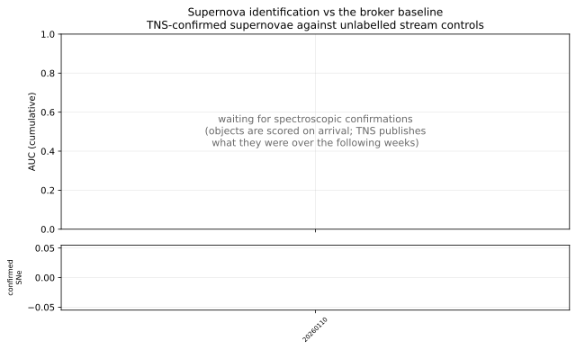

A CNN scores every ZTF alert as it arrives; TNS spectroscopy confirms the truth weeks later; the model is measured against the ALeRCE broker's own classifier on the same objects.

Cumulative over every confirmed object to date. The bars show how many labels each point rests on.

Errors first: a gallery of successes would say nothing the AUC does not.
Read with care. Objects are only labelled if someone thought them worth a spectrum, so neither model can be measured on supernovae the whole community missed. Alerts from objects with more than two prior detections are not scored -- the model is an early classifier and they fall outside what it was trained on.
Updated 2026-08-20 14:46 UTC.